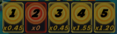

Plinko Pinball
Cara Bermain
| 6. | Bola yang masuk ke Lubang Bola Gratis memberi Anda bola ekstra! |
| 7. | Setelah masuk ke Arena Pinball, bola dapat bertabrakan dengan berbagai bumper dan memantul di papan permainan. |
| 8. | Memukul Bulls Eye atau Pin bisa mengaktifkan pengganda bonus, yang meningkatkan nilai pengganda di kompartemen pengganda. |
| 9. | Setelah keluar dari Arena Pinball, bola memasuki zona Plinko dan memantul turun ke bagian bawah. |
| 10. | Setiap bola jatuh ke dalam kompartemen pengganda di akhir zona Plinko. Pengganda yang diperoleh dicatat di  di Arena Pinball. |
| 11. | Hadiah untuk setiap bola ditentukan dengan mengalikan jumlah taruhan individu bola tersebut dengan pengganda yang diperoleh. |